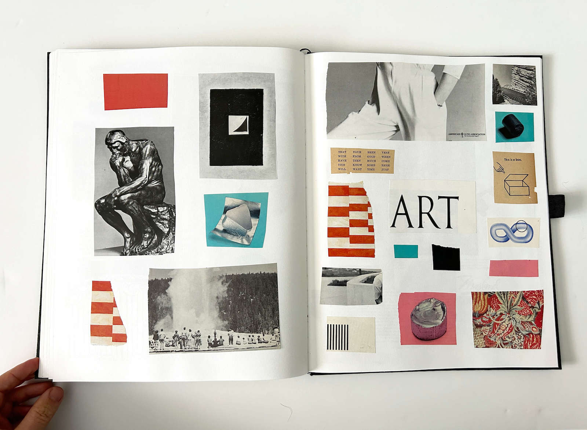
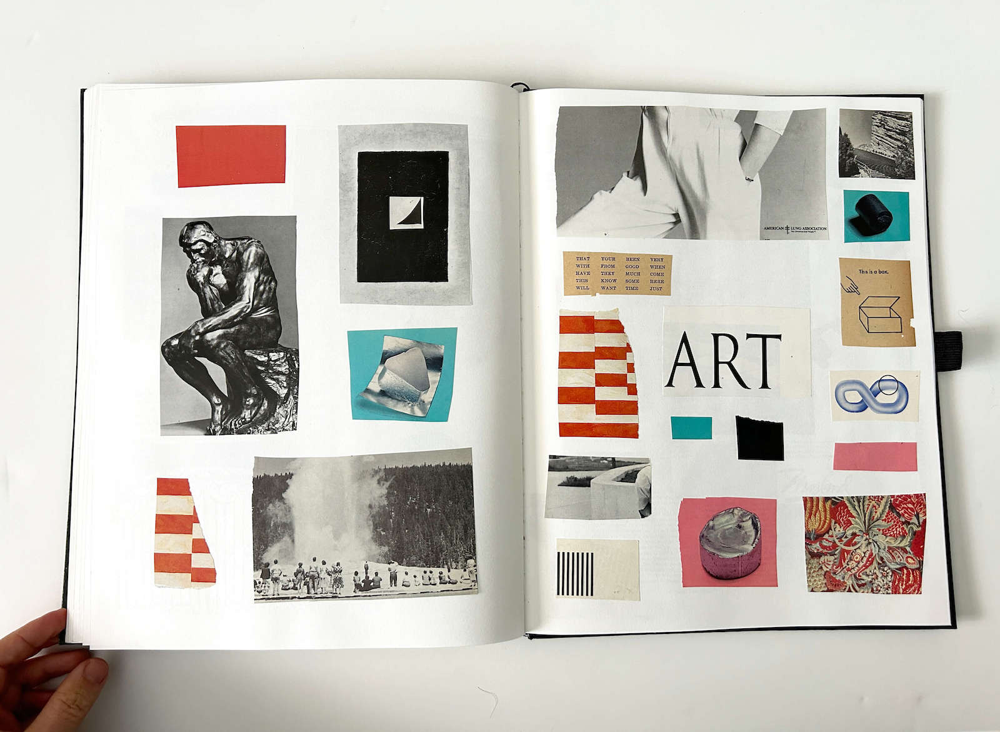
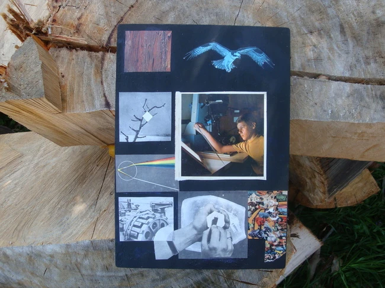
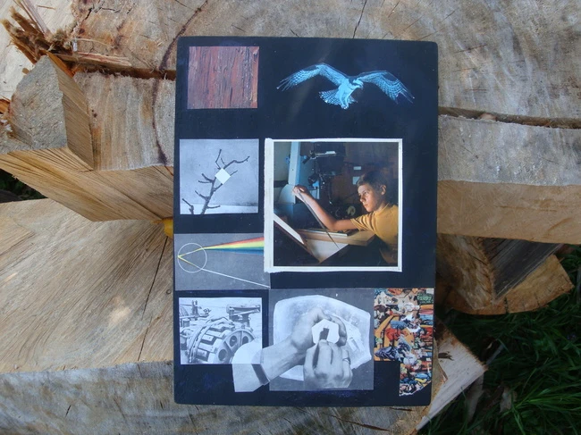

About the Artist

My name is John Finnell, and I create art under the moniker Sundry Sullen. I’ve been making collage on and off for over 20 years, weaving together timeworn and contemporary imagery to explore emotion, transformation, and transcendence. A lot of my work ends up as a mix of order and fracture, fragments that come together into something otherworldly, sparking reflection and mystery and touching on the shifting boundaries of self and no-self.
Beyond art, I practice acupuncture and holistic medicine in Oceanside, CA, surf whenever I can, and am building toward Nervous System Reset retreats in Central America that bring together art, healing, and community.
If you’re curious about the Nervous System Reset retreats I’m putting together, drop your email below. I email very infrequently and only for big updates, so you won’t get spammed.
Want to hear about new work and upcoming retreats?
Prefer to connect directly? Open to collaborations.
Contact MeVintage Collage Book


Chaos Series


Faceless Series


Poster Series


One Hundred Pages
 



Works

 



Collaborations


Photography